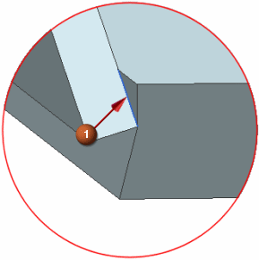
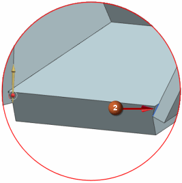
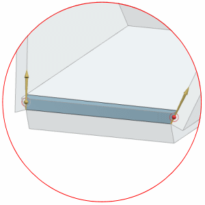

Create a face on the front edge
 Rotate to the front of the assembly.
Rotate to the front of the assembly.
|
Surface |
 Through Curves (Surface group)
Through Curves (Surface group)
-

 edge
edge

-
 Add New Set
Add New Set -
 edge on the other side of the part
edge on the other side of the part

-
The arrows of the two curves may be pointing in opposite directions, as shown below. You want the arrows to point in the same direction.

-
 Reverse Direction (if necessary)
Reverse Direction (if necessary)

-
OK